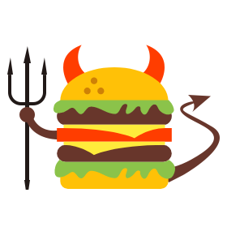

<mat-sidenav-container class="drawer-container" [autosize]="true">
  <mat-sidenav
    mode="side"
    class="drawer"
    [opened]="uiState.drawerOpened"
  >
    <div class="logo">
      
      <span>DASHBOARD</span>
    </div>

    <div class="sidebar-wrapper">
      <div class="nav-container">
        <ul class="nav">
          <li>
            <a
              routerLink=""
              routerLinkActive="router-active"
              [routerLinkActiveOptions]="{exact: true}"
              class="router-link"
            >
              <i class="material-icons">notifications</i>
              <span>探索</span>
            </a>
          </li>

          <li>
            <a class="router-link">
              <i class="material-icons">notifications</i>
              <span>群组</span>
            </a>
          </li>

          <li>
            <a class="router-link">
              <i class="material-icons">notifications</i>
              <span>搜索</span>
            </a>
          </li>

          <li>
            <a
              routerLink="editor"
              routerLinkActive="router-active"
              class="router-link"
            >
              <i class="material-icons">notifications</i>
              <span>开始编写</span>
            </a>
          </li>

        </ul>
      </div>
    </div>
  </mat-sidenav>

  <mat-sidenav-content class="drawer-content">
    <app-main-header></app-main-header>
    <router-outlet></router-outlet>
  </mat-sidenav-content>
</mat-sidenav-container>


